2019年12月12日
Linked Open Data チャレンジ 2019 実行委員会
【開催報告】LODチャレンジ2019授賞式
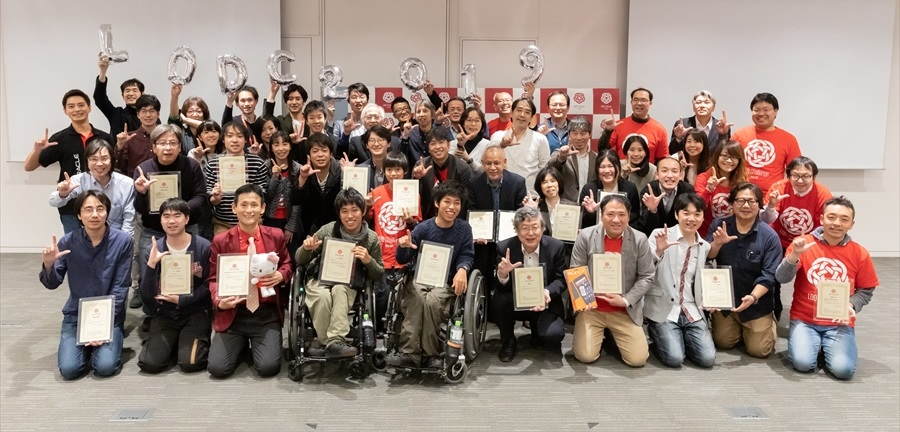受賞作品の表彰
最優秀賞
| 作品名 | 日本の法令LOD |
|---|---|
| 応募者名 | LOD4ALL |
| 紹介資料 | 01_hourei.pdf |
| 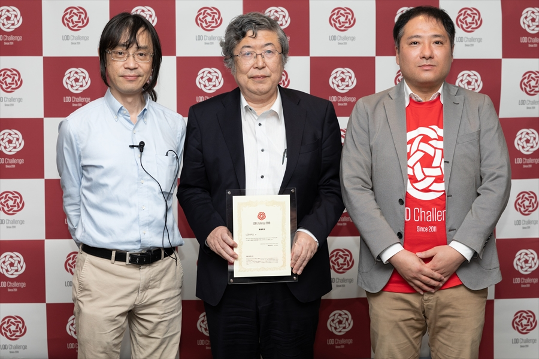 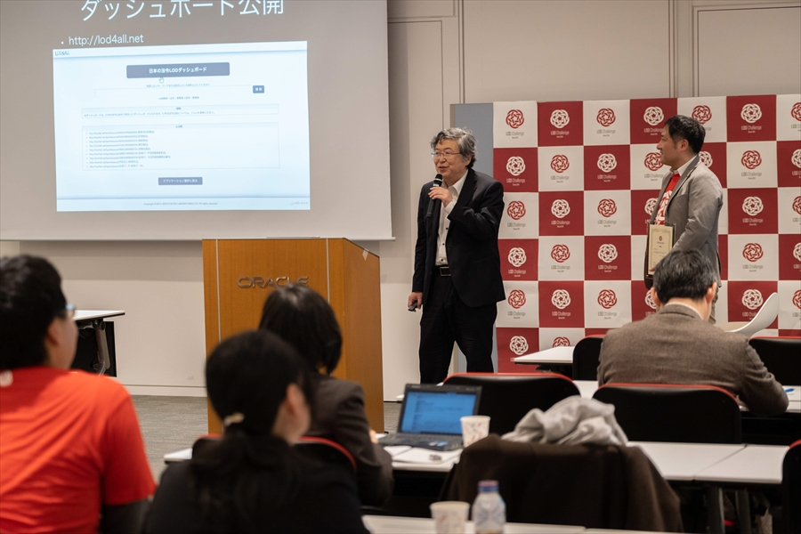 | |
| 審査講評 | 本作品は日本の法令を大規模かつ構造的にLOD化したもので、社会的重要性およびLODとしての適切な構造化がなされていることを高く評価します。単に法令をあるがままにLOD化するのではなく、参照法令関係や構造解析によるリンク構造なども組み入れられている点が特筆すべき点です。今後は、構造解析コードの共有などプロセスを含めたオープン化に期待します。 |
| 副賞 | 賞金５万円 |
部門賞
アイディア部門 優秀賞
| 作品名 | 横浜ホイールマップ |
|---|---|
| 応募者名 | 太田 啓介 |
| 紹介資料 | 02_wheelmap.pdf |
| 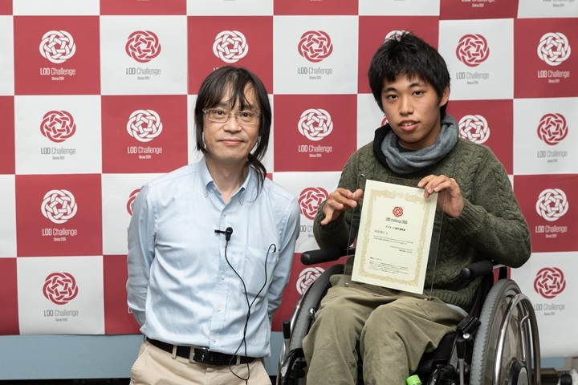 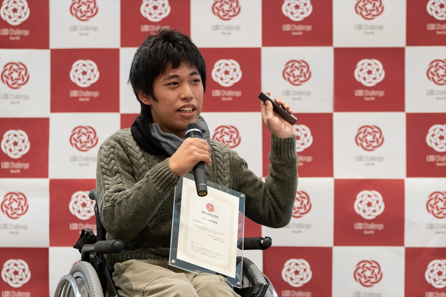 | |
| 審査講評 | 本作品は、バリアフリーな店舗や施設の情報を収集するオーソドックスな活動とは異なり、障害を持つ人がバリアのある店舗をどのようにすれば利用できるか、体験から得られたノウハウをデータとして蓄積するという新たな視点からのアイディアです。ソフト面のバリアフリー化を進め、障害を持つ人々がより自由に活動できる社会が実現されるよう、活用を目指したデータ整備が進められることを期待します。 |
| 副賞 | 賞金３万円 |
データセット部門 優秀賞
| 作品名 | 温泉宿・適応症LOD |
|---|---|
| 応募者名 | メタデータ研究室 |
| 紹介資料 | 03_onsen.pdf |
| 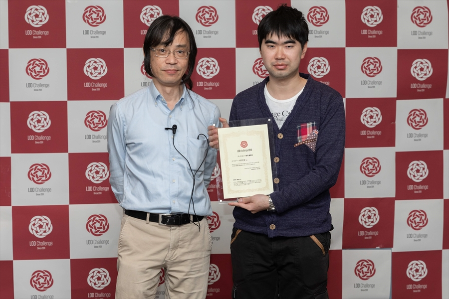 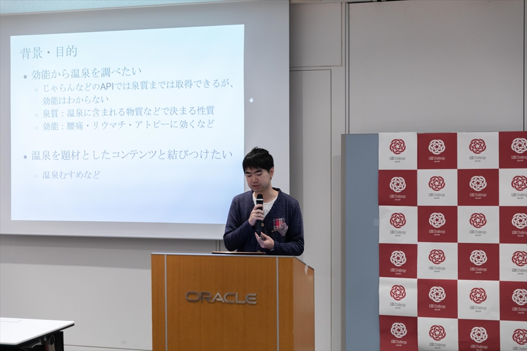 | |
| 審査講評 | 本作品は、日本各地の温泉の泉質や適応症、温泉宿の情報にとどまらず、各地の温泉をモチーフにした温泉むすめやその声優、イラストレーターの情報もLOD化していることを高く評価します。今後も、全国の温泉宿をはじめとした関連情報が拡充され、温泉に関する多様なコンテンツのハブになっていくことを期待しています。 |
| 副賞 | 賞金３万円 |
アプリケーション部門 優秀賞
| 作品名 | 政府の事業が検索できるサイト「JUDGIT!」 |
|---|---|
| 応募者名 | JUDGIT!プロジェクトチーム |
| 紹介資料 | 04_judgit.pdf |
| 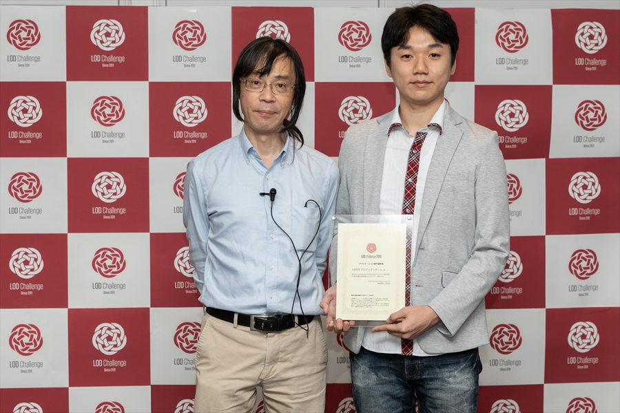 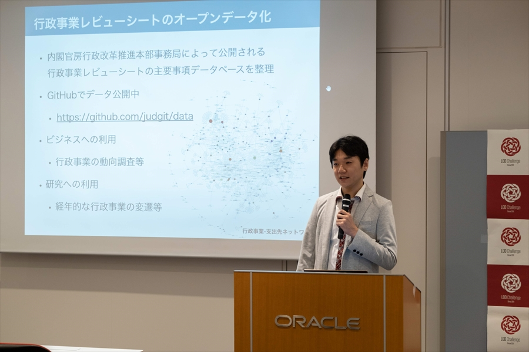 | |
| 審査講評 | 「行政事業レビューシート」を元に国の全ての事業について内容や予算などの情報を検索・閲覧しやすい形でWebサイトにまとめた作品です。サイトの使い勝手やデザイン、データセット公開など、多くの面で良く考えられており洗練されています。対象が広範なため、全体として他データセットへのリンクは難しそうですが、分野を絞れば適切なデータと組み合わせて詳細な分析へ発展するかもしれません。Linked Dataの強みを活かして本活動が更に飛躍することを期待します。 |
| 副賞 | 賞金３万円 |
データ分析・可視化部門 優秀賞
| 作品名 | 月待塔オープンデータの可視化 |
|---|---|
| 応募者名 | 小池 隆 |
| 紹介資料 | 05_tsukimachitou.pdf |
| 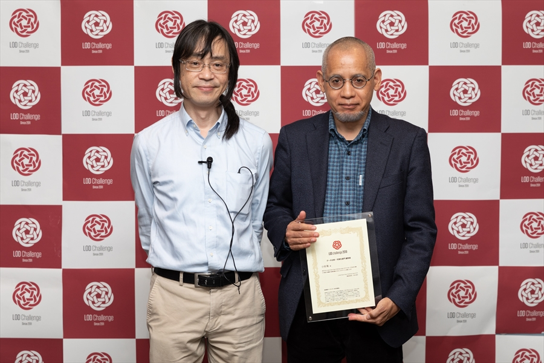 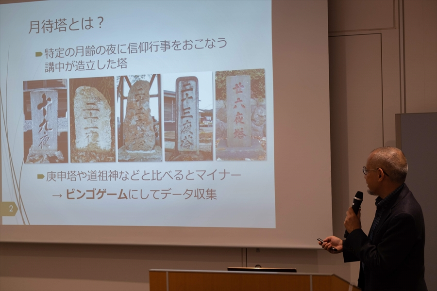 | |
| 審査講評 | 民間信仰である特定の月齢による月待行事を記念して各地で造立された石仏・石塔が月待塔です。参加型オープンデータの収集・公開基盤である2016年基盤技術部門・最優秀賞「Tweet2LinkData」を用いて、月待塔に刻まれた月齢を揃えるゲーム「月待ビンゴ」の参加者のツイートから月待塔の写真や位置情報を収集した月待塔オープンデータを可視化する作品です。地図上に分布をヒートマップとしての表示や、塔の年号記述の時系列での表示などが行えます。全国の路傍にある石仏・石塔を楽しみつつ、オープンデータとして収集・公開する基盤とともに可視化・分析する手法として期待します。 |
| 副賞 | 賞金３万円 |
基盤技術部門 優秀賞
| 作品名 | JSON2LD Mapper Reiwa Edition |
|---|---|
| 応募者名 | 山本 泰智、藤澤 貴智、伊藤 宗太 |
| 紹介資料 | 06_jsonldmapper.pdf |
| 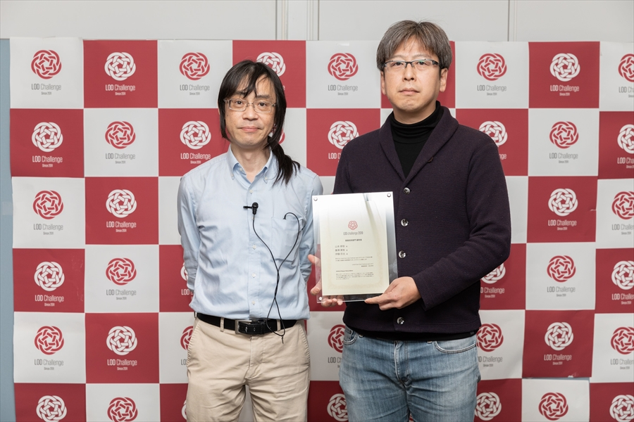 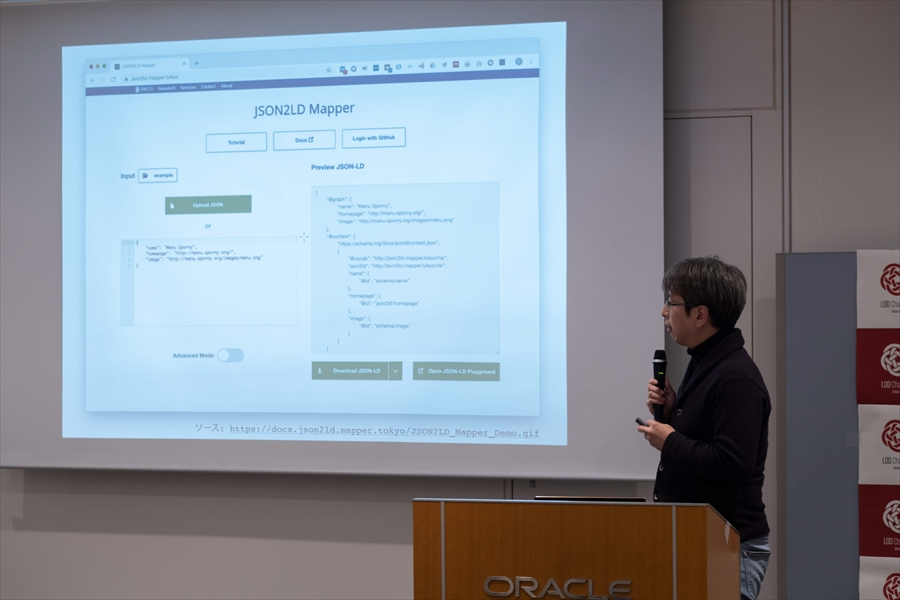 | |
| 審査講評 | 既存のJSONデータをJSON-LDとして扱えるように変換するツールは、LOD普及の裾野を広げるために重要な基盤だと考えられます。本作品は過去にアイディア部門で優秀賞を受賞された後も継続的に開発されており、今回は全面的に見直されているのと完成度が格段に上がっていることを評価しました。 |
| 副賞 | 賞金３万円 |
基盤技術部門 優秀賞
| 作品名 | rdflint |
|---|---|
| 応募者名 | 三上 威 |
| 紹介資料 | 07_rdflint.pdf |
| 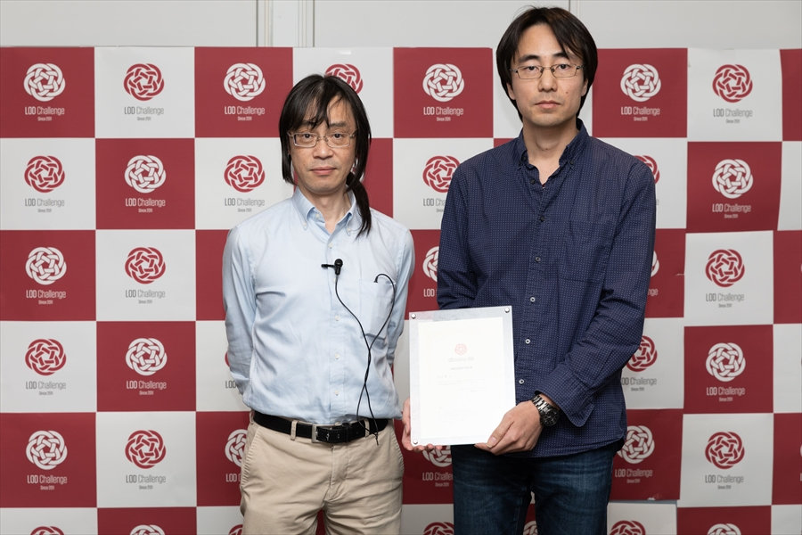 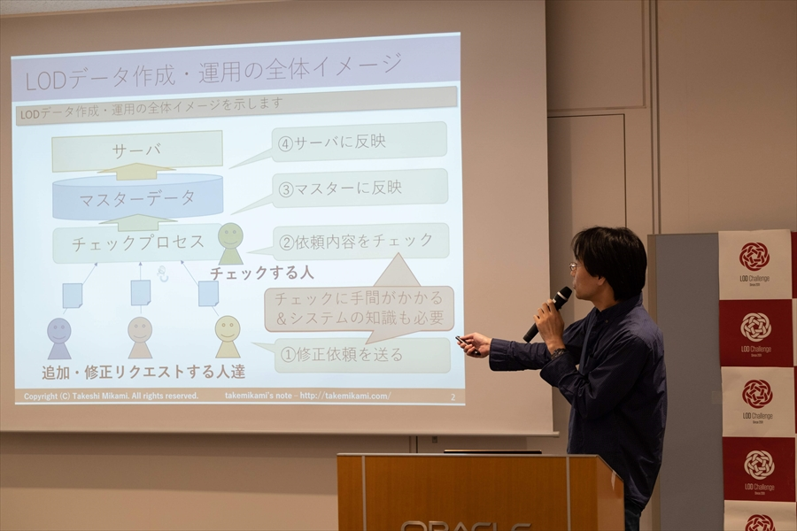 | |
| 審査講評 | RDFデータをLODとして公開するさいには、そのデータが確かにRDFの文法に従っているか、あるいは、主語が定義されているか、などの最低限の品質確認作業が望まれます。しかし、このような作業は、ある程度の技術的な知識が必要なため、データ構築者が限定されてしまう恐れがあります。本ツールを使うことで、比較的容易にRDFデータの品質を確認できるため、より多くの人が高品質なRDFデータを生成できます。このような取り組みはRDFデータの普及に大きく貢献するものであり高く評価します。 |
| 副賞 | 賞金３万円 |
テーマ賞
国際化LOD賞
| 作品名 | Link “Ogura Hyakunin Isshu” to the world! (英訳小倉百人一首LOD) |
|---|---|
| 応募者名 | 高橋 菜奈子 |
| 紹介資料 | 08_hyakuninisshu.pdf |
| 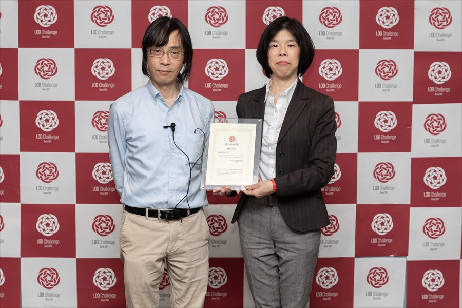 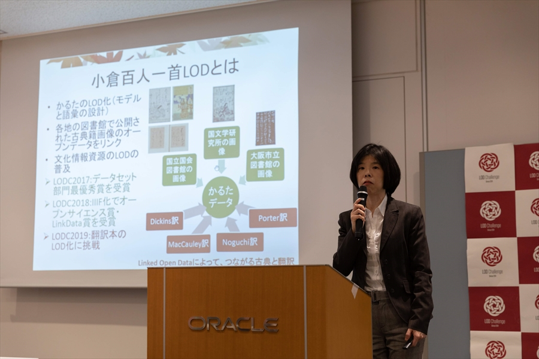 | |
| 審査講評 | LODの公開において、とても重要な課題のひとつである多言語に対応されることで、これまで構築・公開を継続されてきた「小倉百人一首LOD」の国際化を実現されています。多言語対応のみならず、同一言語でも複数の翻訳があることを考慮されるなど、データモデル設計についても十分な考察がなされており、LODの国際化のベストプラクティスとして高く評価いたします。 |
| 副賞 | 賞金１万円 |
AI賞
| 作品名 | 法人しりとり |
|---|---|
| 応募者名 | 林 正洋 |
| 紹介資料 | 09_hojinshiritori.pdf |
| 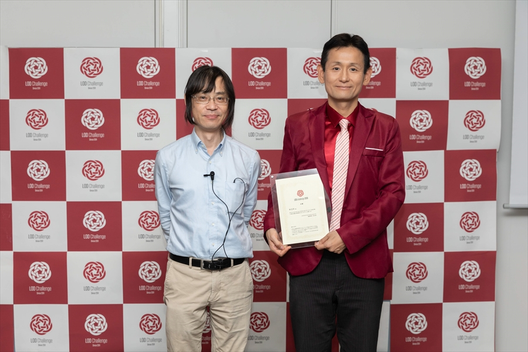 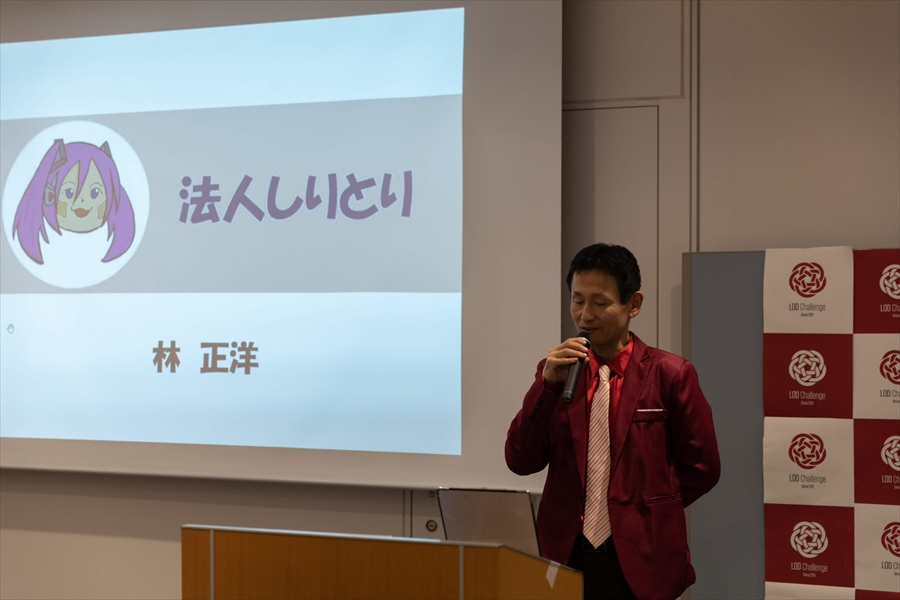 | |
| 審査講評 | 本作品は、経済産業省が提供する「法人インフォ」のSPARQL APIを利用した、法人名のしりとりが遊べるチャットボットです。堅いデータセットを柔らかいゲームアプリに完成度高く仕上げています。法人名しりとりのメイン機能以外に、ユーザを飽きさせずに楽しませるような仕掛けもあり、面白い作品となっています。ソースコードに「ここ工夫の余地あり！！！」とありますが、その工夫を含めた更なる改良を期待しています。 |
| 副賞 | 賞金１万円 |
オープンサイエンス賞
| 作品名 | 3D石造物データ |
|---|---|
| 応募者名 | 小池 隆 |
| 紹介資料 | 10_3dsekizou.pdf |
| 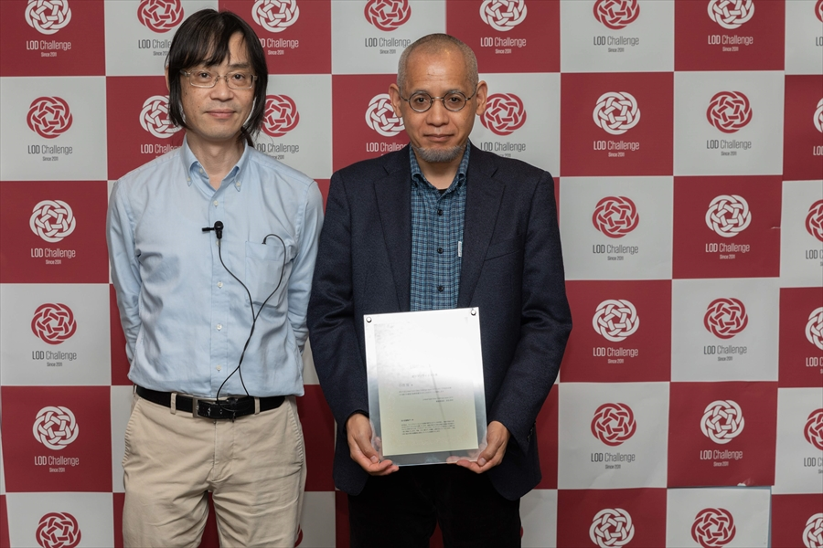 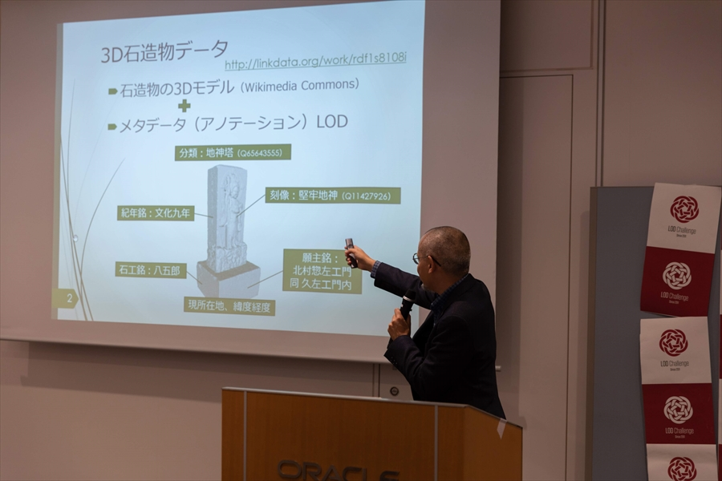 | |
| 審査講評 | 本作品は、フォトグラメトリにより石造物の精巧な3Dデータを作成し、側面や背面から得られるメタデータとともに公開しています。風雨に晒されて劣化が進む石造物の現状態をこのように共有することは、デジタルアーカイブやオープンサイエンスの観点からも重要であり高く評価いたします。今後、この一連のデータ構築・公開方法について広く共有し、同様の取り組みが草の根運動的に普及していくことを期待いたします。 |
| 副賞 | 賞金１万円 |
公共LOD賞
| 作品名 | 長野県オープンデータ取組自治体爆増化計画 |
|---|---|
| 応募者名 | 遠藤 守、須坂市政策推進課、長野県ほか |
| 紹介資料 | 11_naganoken.pdf |
| 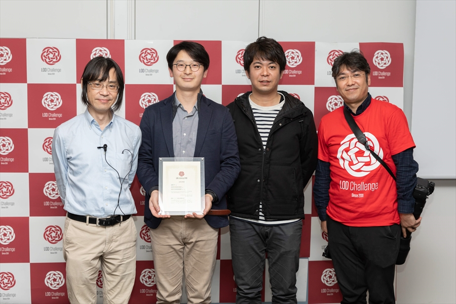 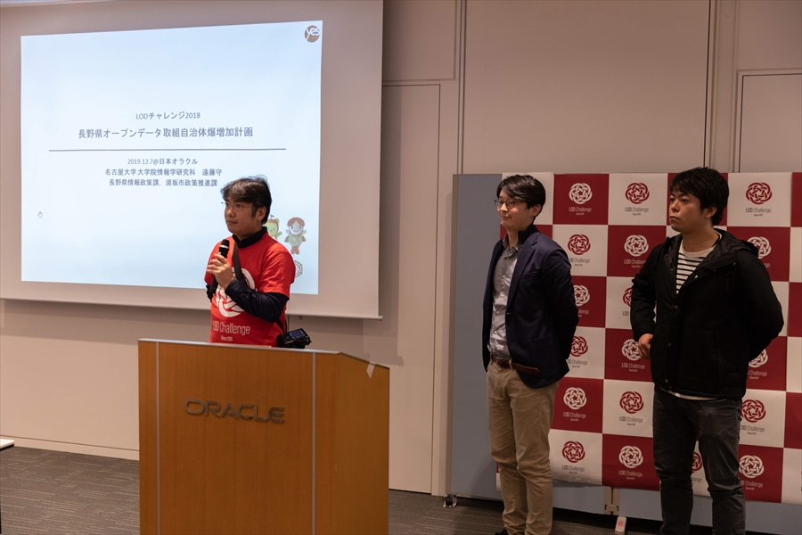 | |
| 審査講評 | 本作品は、長野県内の市町村におけるオープンデータ取組状況を整理し、これからオープンデータの取組を始める自治体に参考となる方策を提案しています。総務省との連携により「オープンデータリーダ研修」を開催し、長野県の全77市町村のうち、半数近い33の市町村が、LinkDataを活用したデータやアプリを作成したことを高く評価しました。本取組が、長野県内外におけるオープンデータの普及につながることを期待いたします。 |
| 副賞 | 賞金１万円 |
こどもLOD賞
| 作品名 | 調べよう！考えよう！発表しよう！身の回りのデータ |
|---|---|
| 応募者名 | 公益財団法人学習情報研究センター |
| 紹介資料 | 12_minomawari.pdf |
| 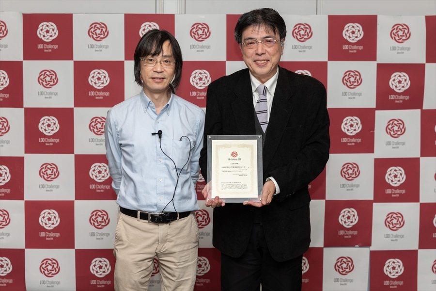 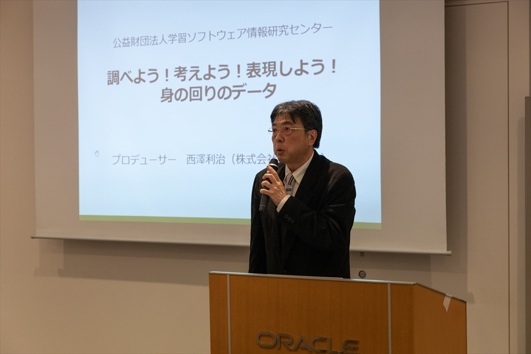 | |
| 審査講評 | 本作品は、データ分析の基礎を学習するための子ども向け教材であり、一部にプログラミング言語Scratchを用いたグラフツールが収録されています。データとは何かという概念的な知識からオープンデータを用いた実践的なデータ分析の方法まで広く解説されており、データドリブンで物事を判断する素養を培えることを高く評価します。今後、さらに多くの子どもたちが体系的にデータ分析を理解できる内容に仕上がり、教育現場に広く展開されることを期待します。 |
| 副賞 | 賞金１万円 |
カルチャーLOD賞
| 作品名 | リズムゲームLODの活用 |
|---|---|
| 応募者名 | 飴 |
| 紹介資料 | 13_rhythmgame.pdf |
| 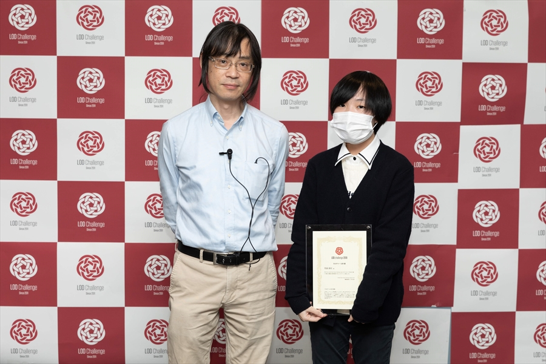 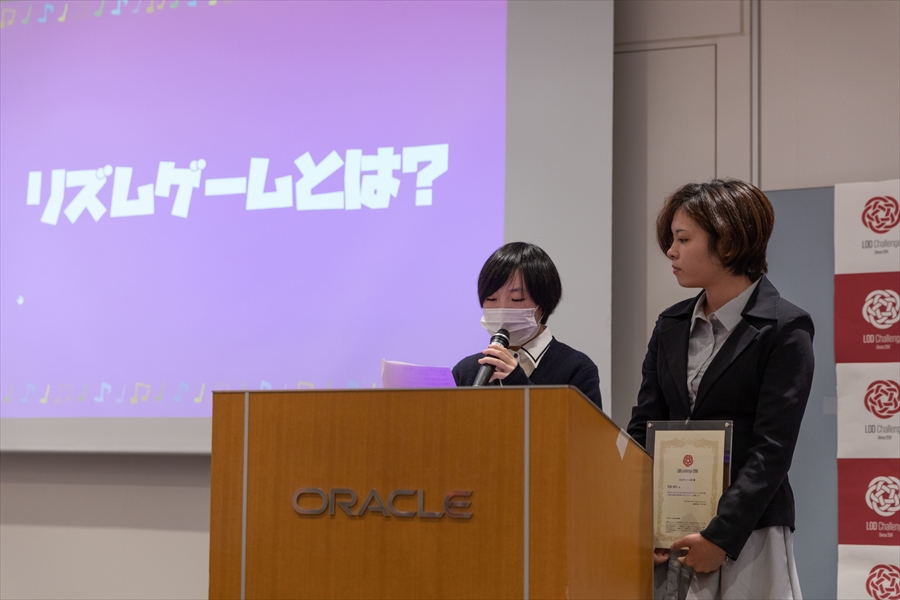 | |
| 審査講評 | 本作品は、リズムゲームの楽曲情報についてLOD化し、様々な方面で活用するアイデアを提案しています。リズムゲームは今やポップカルチャーの一つであり、プレイヤー、リスナー、作曲者、譜面作成者にとって、楽曲情報をタイトル横断的にアクセス可能にすることは意義のある取り組みです。データ構築のメイキング映像を公開している点も特徴的であり、既に多くの楽曲情報を構造化していることも高く評価いたします。今後の継続的な活動と活用の展開を期待します。 |
| 副賞 | 賞金１万円 |
エンターテインメントLOD賞
| 作品名 | 【TDR】夢と魔法とオープンデータ |
|---|---|
| 応募者名 | 槇 由貴 |
| 紹介資料 | 14_tdr.pdf |
| 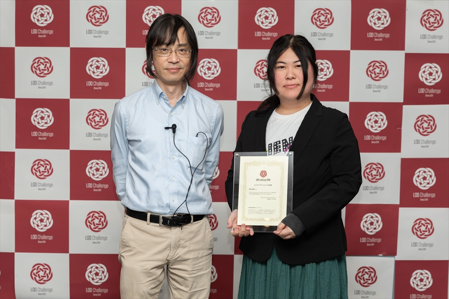 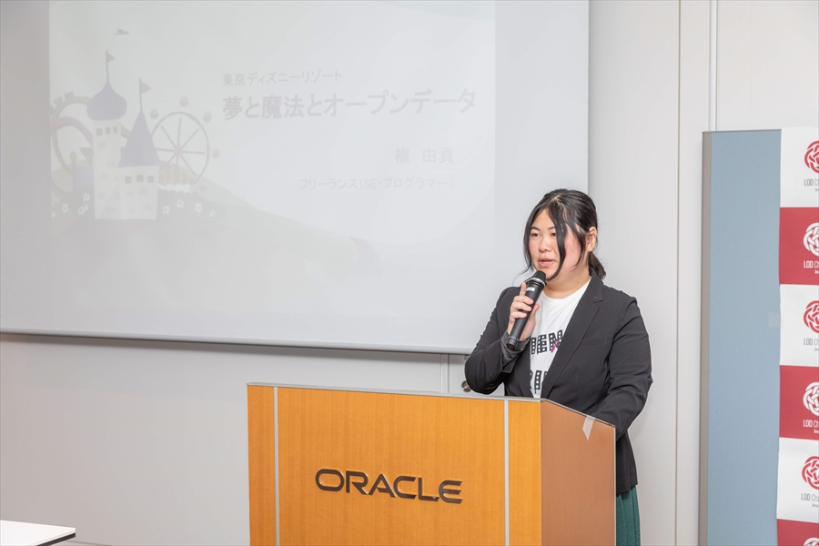 | |
| 審査講評 | 本作品では、東京ディズニーリゾートを最大限楽しむための非常に有益なデータをまとめて、LOD化されています。本データはTDRの真のファンでしか実現できない詳細なものであり、データから作者のTDRへの愛が伝わってきました。今後、さらにファンならではのデータの追加とともに、このデータから多くの夢あふれるアプリが生まれることを期待します。 |
| 副賞 | 賞金１万円 |
地域振興LOD賞
| 作品名 | 弘明寺オープンデータ |
|---|---|
| 応募者名 | 横浜弘明寺商店街協同組合＆弘明寺キッズICTクラブ |
| 紹介資料 | 15_gumyoji.pdf |
| 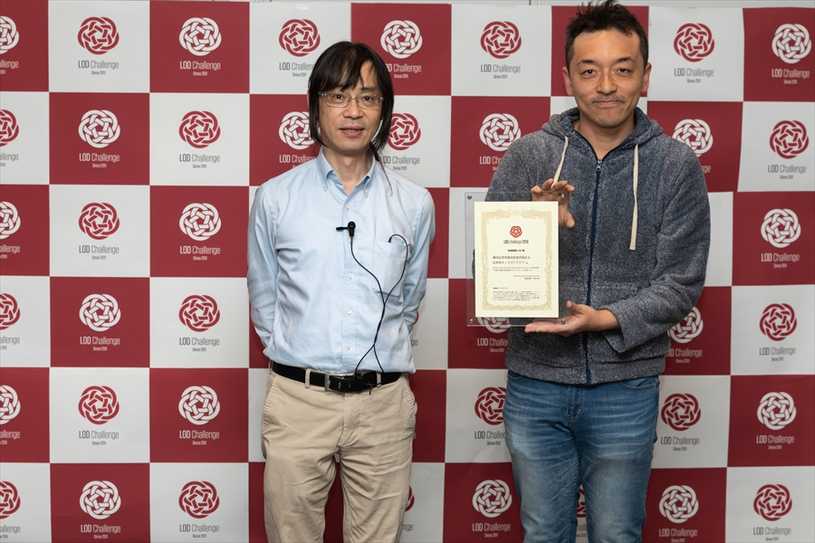 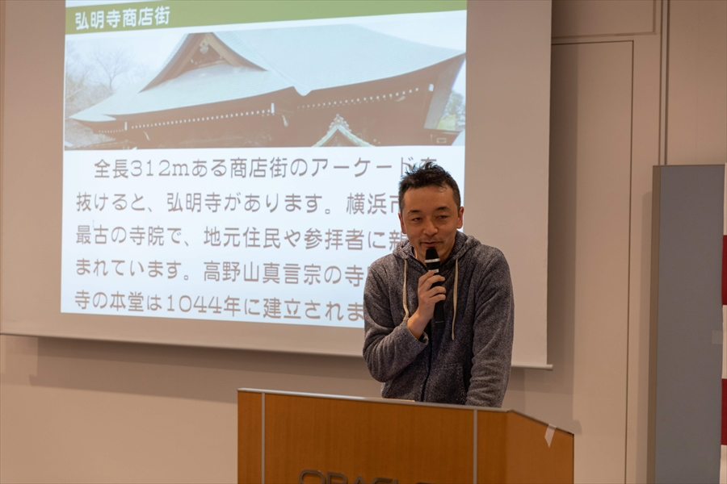 | |
| 審査講評 | 弘明寺の街の発展のための総合的な活動の一環として、商店街の店舗情報をオープンデータとして公開している取り組みです。様々な形式での公開に加え、過去の受賞作品である「LOD Smart Index」を活用した可視化およびSPARQL検索機能の実装を行っています。小学生の時の活動を中学生になっても、グループ活動として継続的に取り組んでいる姿勢も素晴らしく、高く評価します。今後のさらなる活動の継続と発展を期待します。 |
| 副賞 | 賞金１万円 |
学生奨励賞
| 作品名 | Un-DBpedia |
|---|---|
| 応募者名 | メタデータ研究室 |
| 紹介資料 | 16_undbpedia.pdf |
| 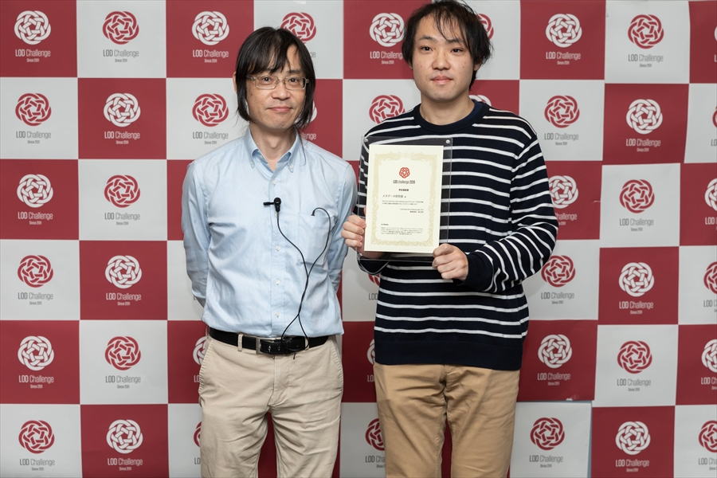 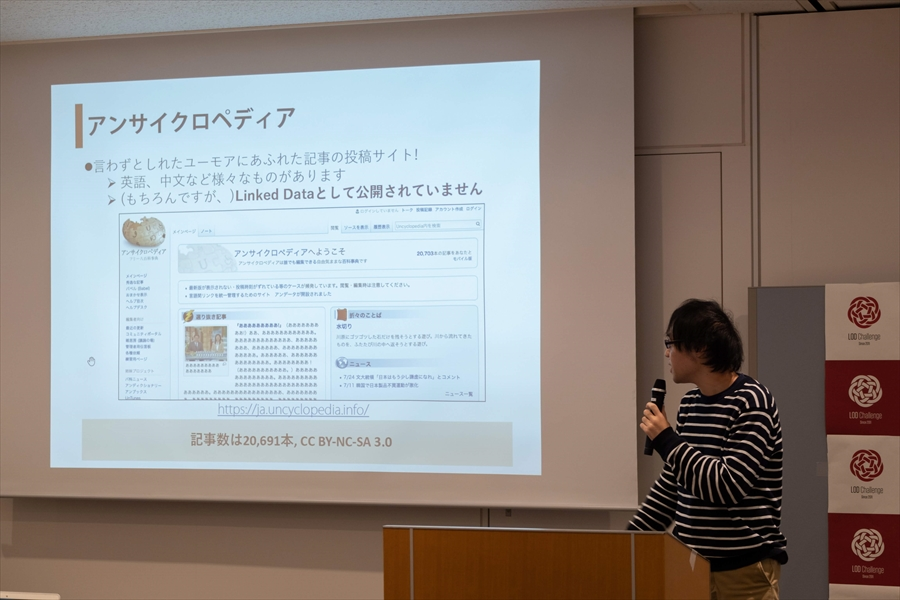 | |
| 審査講評 | 本作品はウィキペディアのパロディサイトであるアンサイクロペディアのコンテンツをLOD化するという野心的なプロジェクトです。アイデアの鋭さと、DBpedia Japaneseにインスパイアされたサイト構築の緻密さの両面を高く評価します。多言語化などによって世界に打って出ることも可能な取り組みですので、今後の発展を強く期待します。 |
| 副賞 | 賞金１万円 |
プラチナスポンサー賞
Inspire the LOD賞（株式会社日立製作所）
| 作品名 | 自治体の未来 |
|---|---|
| 応募者名 | 林 正洋 |
| 紹介資料 | 17_jichitaimirai.pdf |
| 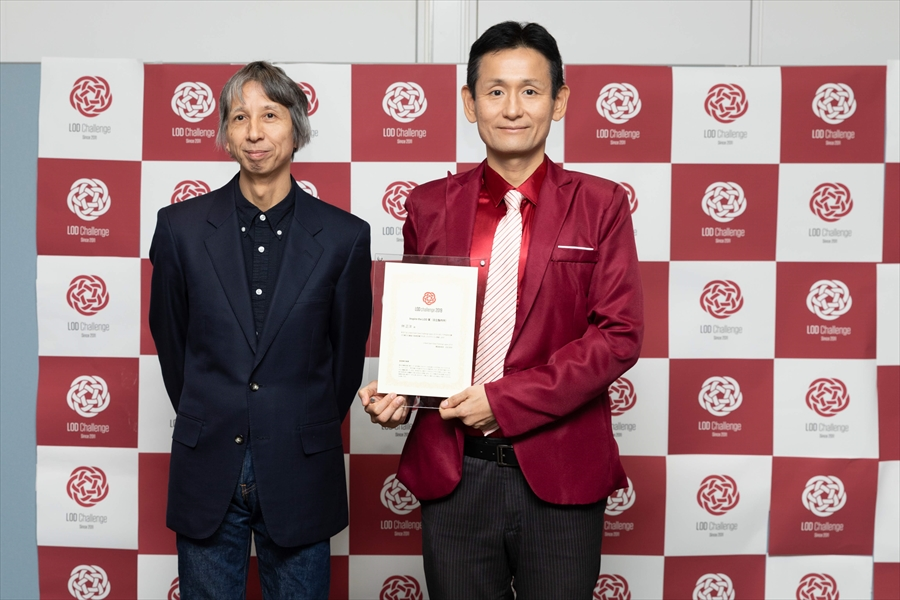 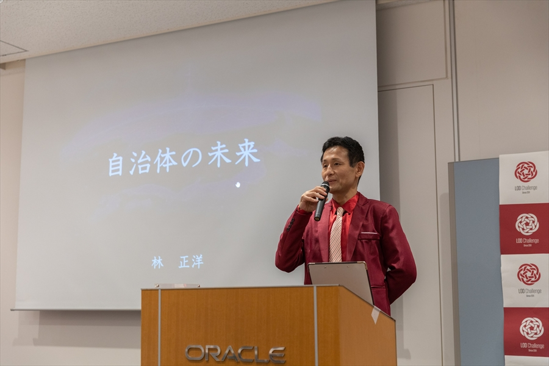 | |
| 審査講評 | 弊社が構築支援に関わっています統計LODのデータをお使いいただきありがとうございます。ベストセラー「地方消滅」が出版されてから5年経ちましたが、まだまだ今後どうすべきかの議論は続いています。本作品では、統計データをわかりやすく可視化しており、自治体の未来を考える議論の一助になるものと評価します。正しい判断のための前提となるのが信頼性の高い統計データだと思いますので、今後とも、統計LODの普及にご助力いただけれれば幸いです。 |
| 副賞 | 賞金３万円 |
ゴールドスポンサー賞
東京南多摩５市賞（八王子市・町田市・日野市・多摩市・稲城市）
| 作品名 | 自治体の未来 |
|---|---|
| 応募者名 | 林 正洋 |
| 紹介資料 | 17_jichitaimirai.pdf |
| 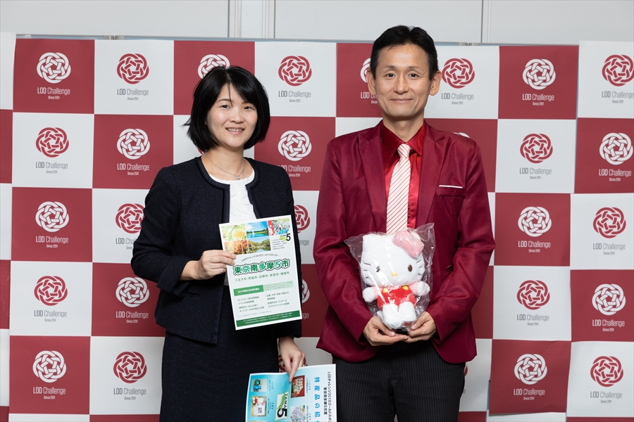 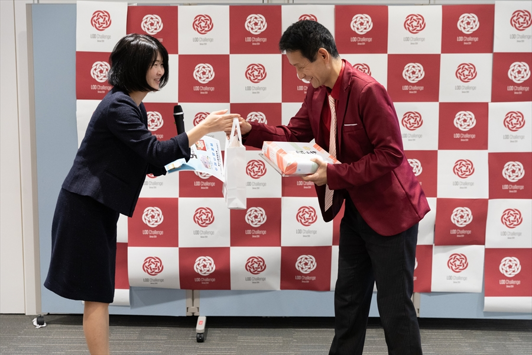 | |
| 審査講評 | 全国の自治体の統計データを使用し、各自治体の将来予測を表とグラフを用いて分かりやすく説明されています。各自治体の人口統計を視覚的にわかりやすく表示する作品はこれまでにも存在しましたが、本作品は将来推計が掲載され、市民が自分の住んでいる自治体の未来を考えるきっかけ作りになっている点について評価いたしました。 |
| 副賞 | 東京南多摩５市の特産品 |
オントロジー賞（オントロノミー合同会社）
| 作品名 | 日本の法令LOD |
|---|---|
| 応募者名 | LOD4ALL |
| 紹介資料 | 01_hourei.pdf |
| 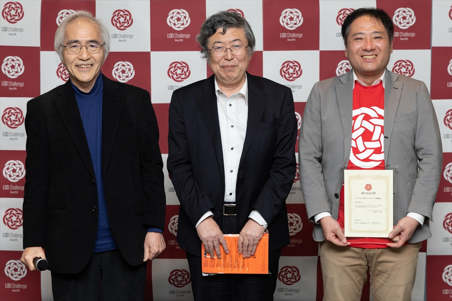 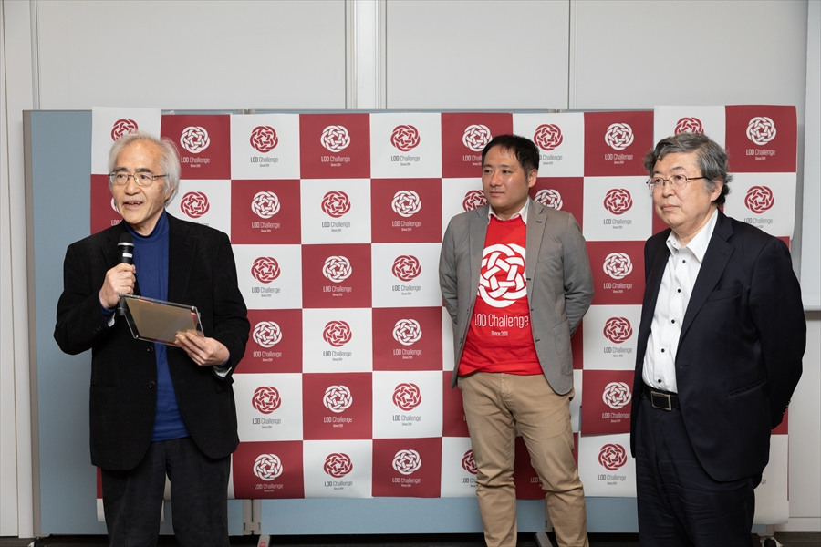 | |
| 審査講評 | 日本の法令データをRDFに変換するという大変チャレンジングな課題に取り組まれたことに、敬意を表します。記述論理では推論不可能なオントロジーになっていますが、もしものさいにはご相談ください。 |
| 副賞 | Fire HD 8 タブレット 16GB - Alexa搭載 |
パートナー賞
ヨコハマ・アート・LOD賞（公益財団法人横浜市芸術文化振興財団）
| 作品名 | 山下公園周辺アートマップ |
|---|---|
| 応募者名 | 山葵 |
| 紹介資料 | 18_yamashitapark.pdf |
| 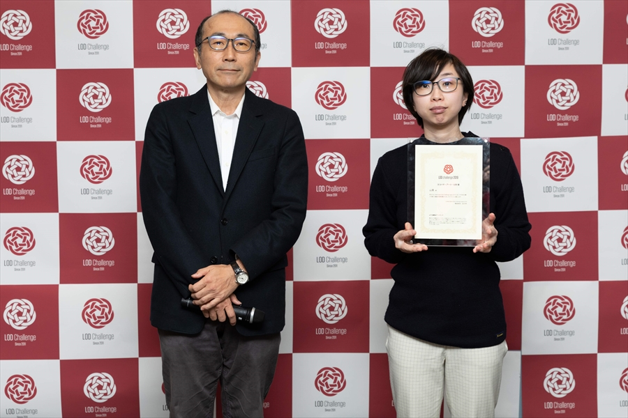 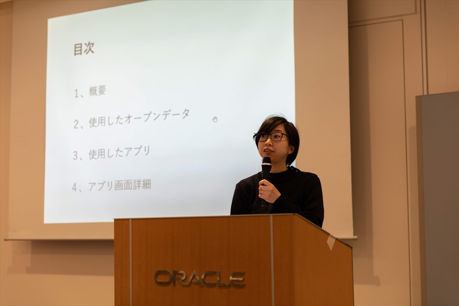 | |
| 審査講評 | 横浜の山下公園周辺のアートスポットに限定することで「使いやすさ」を目的とした作品になっています。数多くのアートスポットが掲載されるヨコハマ・アート・ＬＯＤから必要な情報をピックアップしています。さらに公開マップとの連携により利便性を上げています。観光客の目線からこのような作品が数多く作成されることが、オープンデータの素晴らしいところだと感じています。 |
| 副賞 | 財団関連グッズ |
B Inc.賞（株式会社B Inc.）
| 作品名 | カブトムシチャンネル |
|---|---|
| 応募者名 | カケルチャンネル（水野翔） |
| 紹介資料 | 19_kabutomushi.pdf |
| 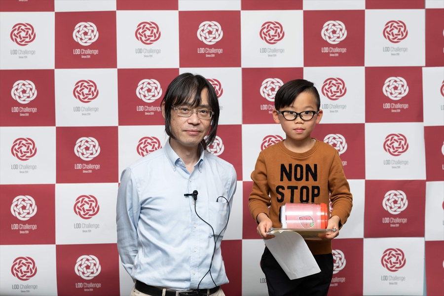 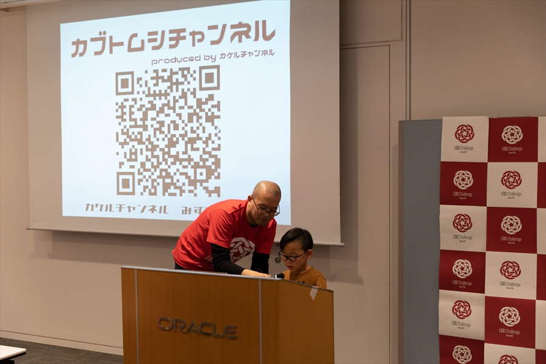 | |
| 審査講評 | カブトムシにかける熱意に感動しました。子供の頃、育てていたことを思い出します。卵から成虫になるまで、生後日数データ付きの様々な角度からの写真オープンデータがあれば、カブトムシ飼育支援AIの開発にもつながりそうです。これからも、いろいろな知見のオープンデータ化を楽しみにしています。パソコンを使ったデータ活用にもぜひチャレンジしてください！ |
| 副賞 | IchigoJam Get Started Set S |
リンクデータ賞（一般社団法人リンクデータ）
| 作品名 |
ソサエティ5.0に向けた人材育成
発車メロディ 連続テレビ小説 ASMRデータ 日本のおみやげ ウナギサクセンＮＥＸＴ 横浜家系ラーメン好きのためのデータベース |
|---|---|
| 応募者名 |
キッズコネクション キッズコネクション鉄道研究部 吉田 悠志 飴 アイクラ（根本藍） 太田 朔久 吉田 健志 |
| 紹介資料 | 20_society50.pdf |
| 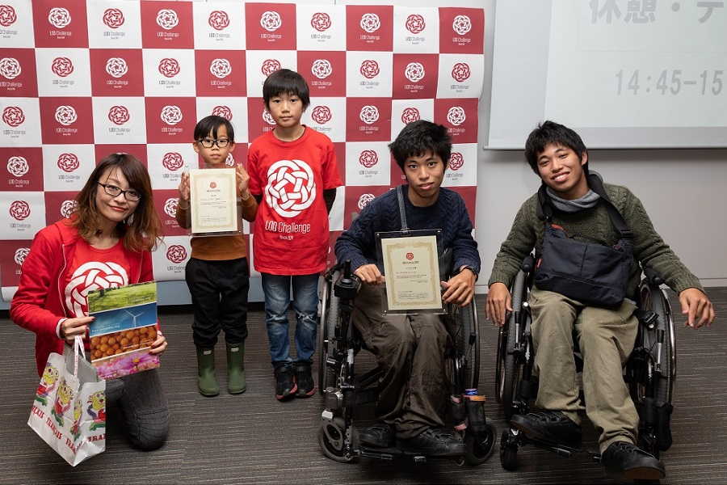 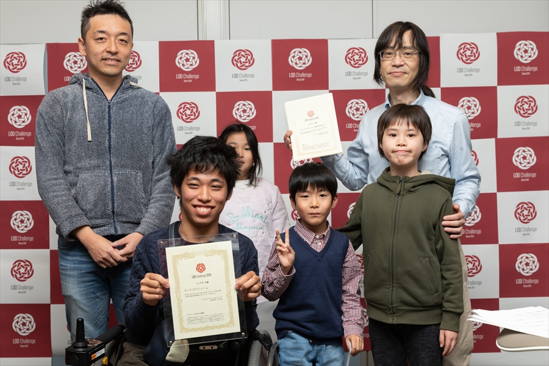 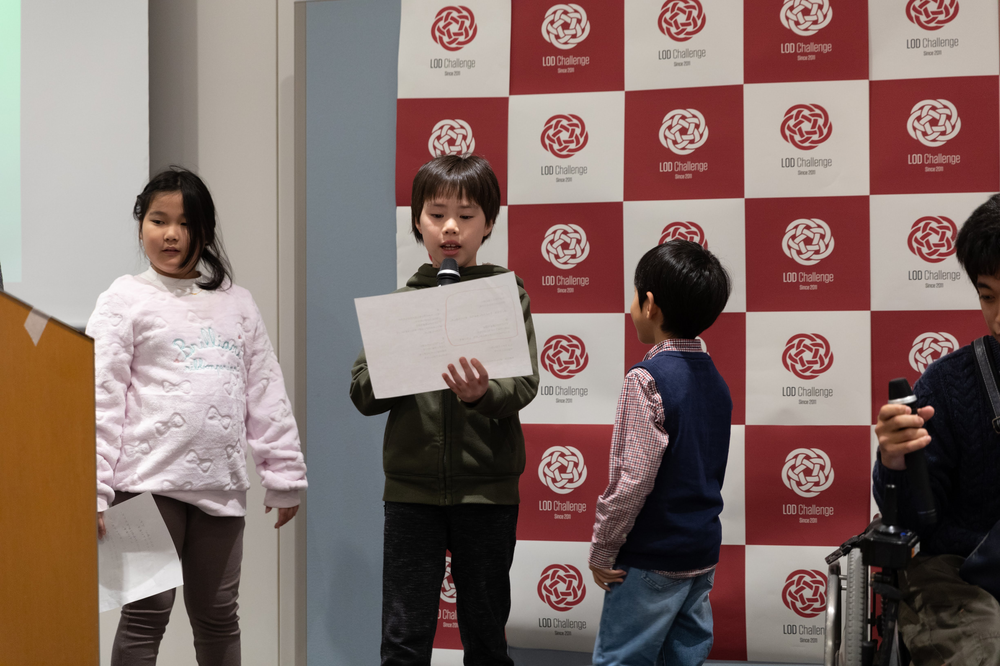 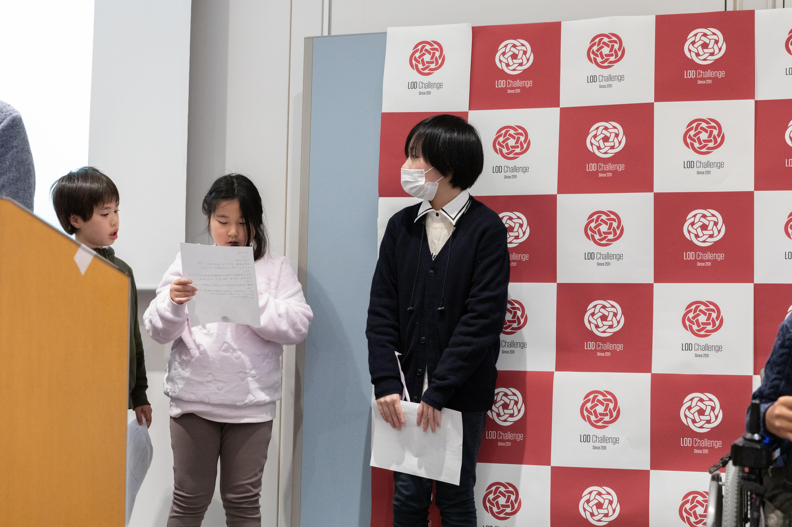 | |
| 審査講評 | 自分の興味・関心を活かしてオリジナリティ溢れるオープンデータを作成し、社会に向けて発信するという取り組みがとても素晴らしいです。データを作る技術単体を学ぶのではなく、様々な情報発信技術や制度を参加者同士で学び合える総合的なプログラムとなっており、参加者の皆さんがソサエティ5.0時代のリーダーとなって活躍される未来が想像できます。これからもLinkData.orgで皆さんの活動の成果がたくさん発信されることを期待しています。 |
| 副賞 | LinkData.org ノベルティグッズ + α |
企業事例紹介
株式会社日立製作所 様
資料スライド日本オラクル株式会社 様
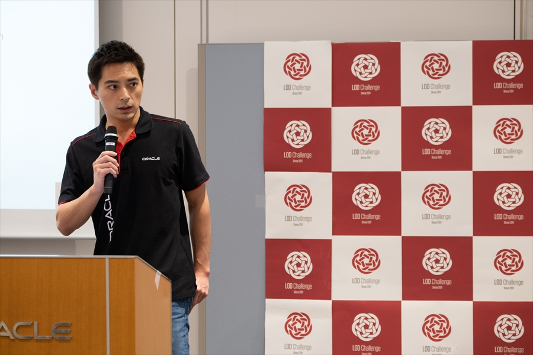LODチャレンジ実行委員会活動報告
デモ見学
懇親会
実行委員による会場設営等
おわりに
本件に関するお問い合わせ先
Linked Open Data チャレンジ 2019 実行委員会 事務局